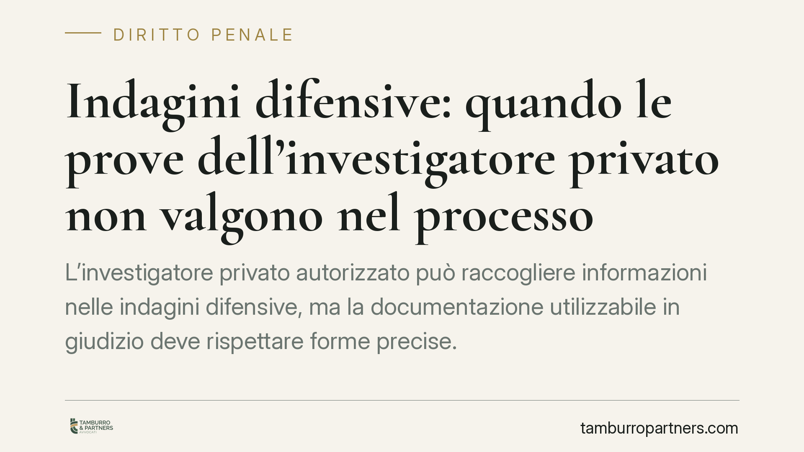
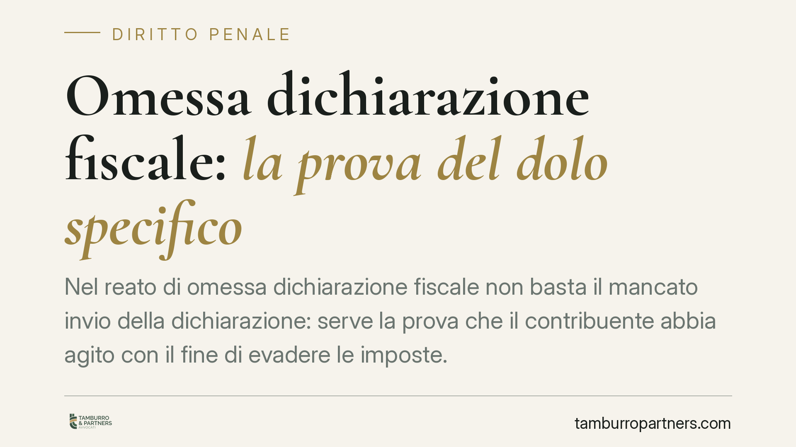
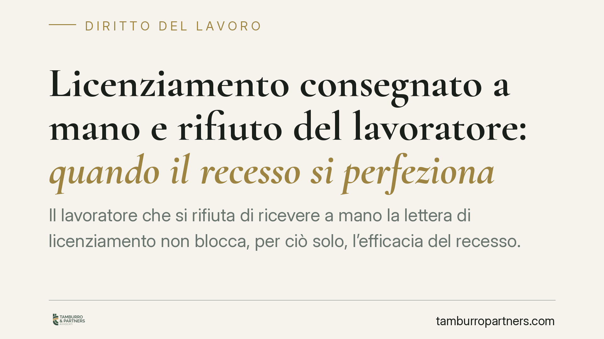
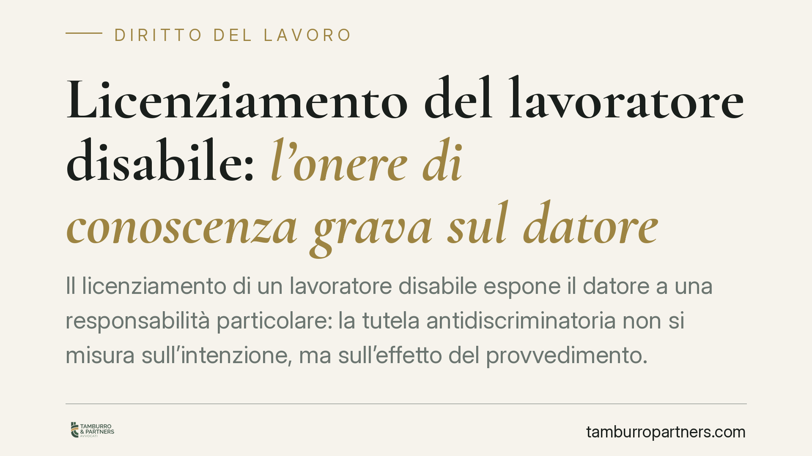

Uccidere un animale senza motivo: reato anche senza crudeltà
Uccidere un animale non è reato solo quando si agisce per crudeltà. L'art. 544-bis del codice penale punisce anche chi cagiona la morte dell'animale «senza necessità». Una recente …

Recensioni false online: cosa dice davvero la normativa vigente
Le recensioni online incidono sulle scelte di acquisto e, quando sono false o manipolate, possono integrare una pratica commerciale scorretta. La disciplina non nasce da una norma …

Superbonus 110% e truffa aggravata: il momento della consumazione secondo l'orientamento delle Sezioni Unite
Nelle frodi legate al Superbonus 110% si discute del momento in cui si consuma la truffa aggravata per il conseguimento di erogazioni pubbliche. L'orientamento in formazione colleg…

Licenziamento per inidoneità fisica: quando è illegittimo
Con la sentenza 4624/2026 la Cassazione torna sul licenziamento per sopravvenuta inidoneità fisica. Il principio è netto: il recesso è legittimo solo come ultima soluzione, dopo ch…

Foto di minori nudi e art. 600-ter c.p.: quando manca la pornografia
Non ogni immagine di un minore senza vestiti configura pornografia minorile. In una recente pronuncia di merito si è ribadito che, in assenza del carattere oggettivamente pornograf…

Disabile e ascensore in condominio: diritti, maggioranze e limiti
L'installazione di un ascensore divide spesso le assemblee condominiali. Quando la richiesta arriva da un condomino con disabilità, entrano in gioco regole speciali sulle barriere …

Rifiuti conferiti male: niente multa al condominio se l'autore resta ignoto
Il Tribunale di Caltanissetta, con la sentenza 329/2026, ha stabilito che il Comune non può sanzionare il condominio per l'errato conferimento dei rifiuti quando l'autore materiale…

Testamento olografo falso: nullità e impossibilità di sanatoria
Un testamento olografo scritto da mano diversa da quella del defunto non è semplicemente annullabile: è un atto inesistente. Lo ribadisce il Tribunale di Trapani con la sentenza n.…

Bonus affitto genitori separati 2026: le FAQ e chi rischia di perderlo
Sono state pubblicate otto FAQ che chiariscono i requisiti del bonus affitto 2026 destinato ai genitori separati o divorziati. I chiarimenti riguardano la proprietà immobiliare, l'…

Abuso edilizio: la prescrizione del reato non salva l'opera dalla demolizione
Quando il reato di abuso edilizio si prescrive, molti pensano che l'opera abusiva sia ormai al sicuro. Non è così. La prescrizione estingue solo la responsabilità penale, ma lascia…

Riscaldamento centralizzato: si può eliminare senza l'unanimità?
La dismissione del riscaldamento centralizzato in favore di impianti autonomi divide spesso le assemblee. La questione è se serva l'unanimità o basti una maggioranza qualificata. L…

Divieto di doppio incasso: indennizzo assicurativo e risarcimento del danno
Chi ha ricevuto un indennizzo dalla propria assicurazione può pretendere l'intero risarcimento anche dal responsabile del danno? La risposta, consolidata in giurisprudenza, è negat…

Indagini difensive: quando le prove dell'investigatore privato non valgono nel processo
L'investigatore privato autorizzato può raccogliere informazioni nelle indagini difensive, ma la documentazione utilizzabile in giudizio deve rispettare forme precise. Quando quest…

Omessa dichiarazione fiscale: la prova del dolo specifico
Nel reato di omessa dichiarazione fiscale non basta il mancato invio della dichiarazione: serve la prova che il contribuente abbia agito con il fine di evadere le imposte. Un recen…

Licenziamento consegnato a mano e rifiuto del lavoratore: quando il recesso si perfeziona
Il lavoratore che si rifiuta di ricevere a mano la lettera di licenziamento non blocca, per ciò solo, l'efficacia del recesso. Un recente orientamento di merito distingue tra rifiu…

Licenziamento del lavoratore disabile: l'onere di conoscenza grava sul datore
Il licenziamento di un lavoratore disabile espone il datore a una responsabilità particolare: la tutela antidiscriminatoria non si misura sull'intenzione, ma sull'effetto del provv…
Negare le visite ai figli: quando non è reato ex art. 388 c.p.
Un litigio sul calendario delle ferie o un rifiuto motivato da esigenze organizzative non trasformano un genitore in autore di reato. Lo ha ribadito il Tribunale di Taranto, assolv…

Contabilizzazione del calore: è legittimo addebitare il "consumo massimo" a chi non ha i contatori?
Una recente pronuncia di merito è tornata sul riparto delle spese di riscaldamento quando alcune unità non dispongono dei contabilizzatori del calore. In discussione la prassi di a…

Quota 100 e cumulo redditi: la Cassazione ridimensiona il recupero INPS
Una pensionata percepisce pochi euro da lavoro e l'INPS le chiede indietro un'intera annualità di pensione. La Corte di Cassazione, Sezione Lavoro, interviene sul divieto di cumulo…

Debiti condominiali: il precetto al condomino in regola si ferma
Il Tribunale di Milano, con la sentenza 7023/2026, ha bloccato il precetto notificato a condòmini in regola con i pagamenti. Il creditore del condominio non può rivolgersi a chi ha…

Recupero e confisca dei beni: il recepimento della Direttiva UE 2024/1260
È in corso di pubblicazione il decreto legislativo che recepisce la Direttiva UE in materia di recupero e confisca dei beni di provenienza illecita. Numero e data vanno confermati …

Sequestro di criptovalute e confisca nel processo penale: cosa cambia
È in corso di attuazione la direttiva UE sul recupero e la confisca dei beni di provenienza illecita. Le nuove regole rafforzano i poteri investigativi del pubblico ministero e del…

Confisca penale e recepimento della Direttiva UE 2024/1260: cosa sapere
L'Unione europea ha adottato la Direttiva (UE) 2024/1260 sul recupero e la confisca dei beni di origine illecita. Gli Stati membri devono recepirla entro i termini fissati dalla di…

Consegna di assegni e prova dell'incasso: a chi spetta?
Chi salda un debito consegnando assegni poi accettati dal creditore può considerarsi liberato, anche senza dimostrarne l'avvenuto incasso. Un recente orientamento della Cassazione …

Bonus affitto per genitori separati: perché le coppie non sposate restano fuori
Alcune Faq del Ministero delle Infrastrutture hanno chiarito i requisiti di accesso a un contributo per le spese di locazione destinato ai genitori separati o divorziati. Il punto …

Dimissioni del padre entro il primo anno del figlio: preavviso ed esonero
Il padre che si dimette entro il primo anno di vita del figlio può farlo senza preavviso? La risposta dipende dal regime temporale applicabile e dal congedo effettivamente fruito. …

Vetrate Vepa in condominio: quando serve il consenso di tutti
Le vetrate panoramiche amovibili, le cosiddette Vepa, consentono di chiudere balconi e logge senza opere murarie. Rientrano nell'edilizia libera, ma questo non basta a metterle al …

Maltrattamenti in famiglia e violenza assistita: quando scatta l'aggravante per i minori
Una recente pronuncia della Corte d'Appello di Ancona (sent. 112/2026) ribadisce due principi: il reato di maltrattamenti in famiglia sussiste indipendentemente dalla capacità di r…

Ponteggio sul marciapiede e TOSAP: quando è davvero dovuta
La TOSAP su un ponteggio collocato sul marciapiede non può fondarsi sulla sola presenza fisica della struttura. Secondo l'orientamento della Cassazione, occorre verificare se e qua…

Amministratore infedele: quali danni può chiedere il condominio
La Cassazione penale torna sull'appropriazione indebita commessa dall'amministratore ai danni del condominio. Oltre alla restituzione delle quote sottratte, i giudici ammettono il …